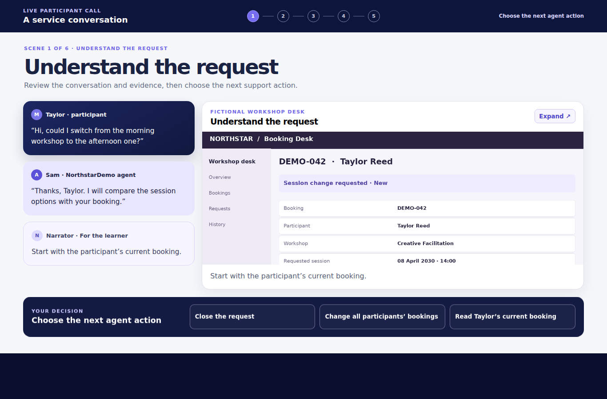

Learning that
invites you in.
I turn complex information into clear, interactive experiences. Explore a collection built for making decisions, trying things out, and learning by doing.
Explore the work ↓
Explore the collection
18 adapted originals. Distinct designs, interactions, and media.
Clear thinking.
Purposeful interaction.
I’m Fabian, a learning content developer focused on turning information into experiences people can use.
My approach combines a clear learning objective, practical scenarios, and feedback that helps learners understand their decisions. My toolkit includes Articulate 360, HTML/CSS/JavaScript, Canva, and PowerPoint.
A note about these samples
Adapted from my original professional learning work for Affirm. The interaction designs are preserved; organization-specific text, records, tools, and data-bearing screens have been replaced with fictional examples. All video and audio recordings are new replacements.
These are generic portfolio adaptations, not Affirm operational training or an endorsement. Original unbranded guide artwork is retained where appropriate.
Let’s make the complex
feel clear.